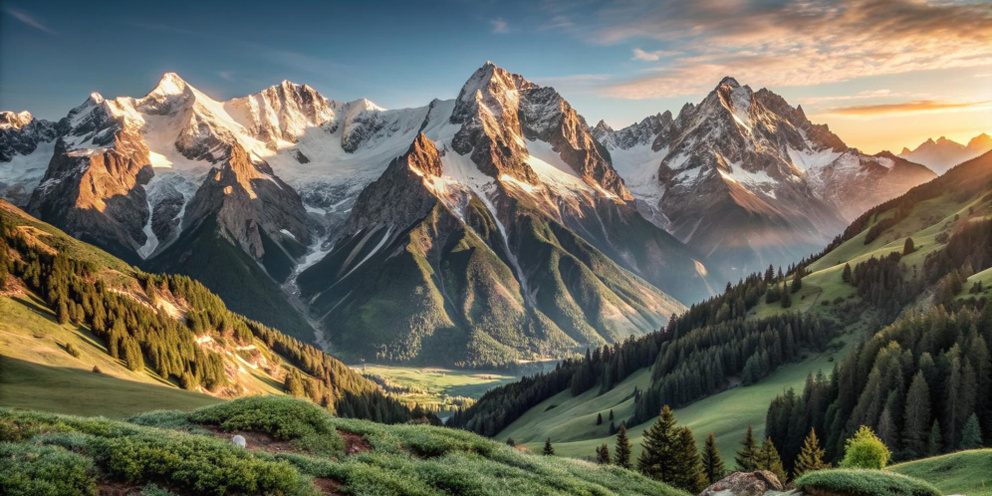
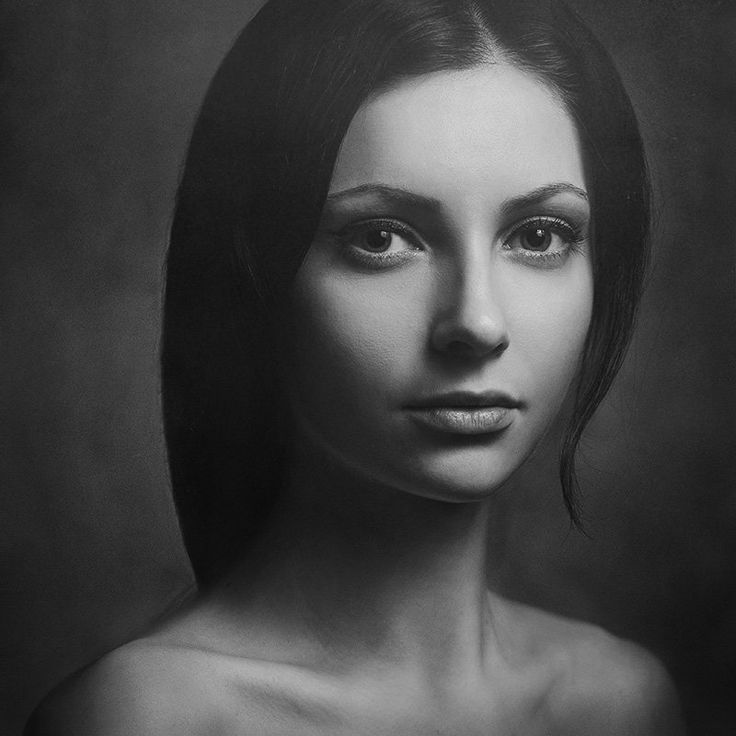
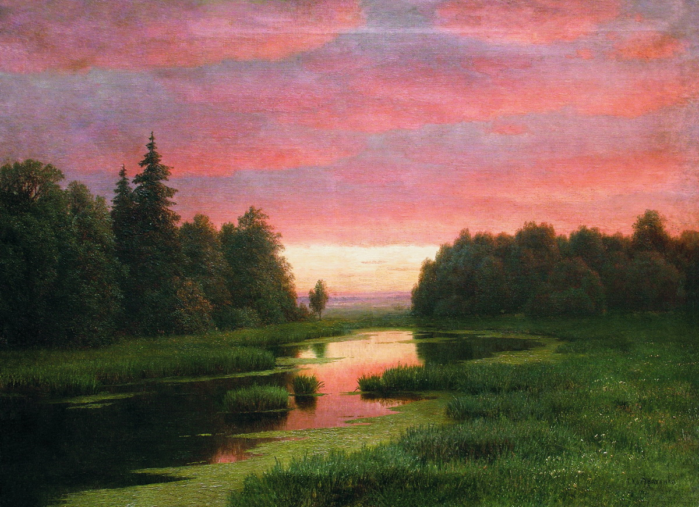

Адаптивная галерея изображений
Демонстрация техник адаптивной верстки из практической работы 16
Техники адаптивных изображений
1. Базовое адаптивное изображение
Изображение масштабируется пропорционально ширине родительского контейнера.
- Занимает 100% ширины контейнера
- Высота рассчитывается автоматически
- Работает на всех устройствах

2. Picture element с форматами
Браузер выбирает оптимальный формат изображения в зависимости от поддержки.
- WebP для современных браузеров
- JPEG для старых браузеров
- Автоматическое переключение

3. Разные изображения для разных экранов
Загрузка оптимизированных версий изображений для разных устройств.
- Десктопы: большие изображения
- Планшеты: средние изображения
- Мобильные: маленькие изображения
4. Object-fit свойства

object-fit: cover
Заполняет с обрезкой
object-fit: contain
Вписывает полностью
object-fit: fill
Растягивает, искажая пропорции
Адаптивная галерея проектов
Изменяйте размер окна браузера, чтобы увидеть адаптивность в действии
